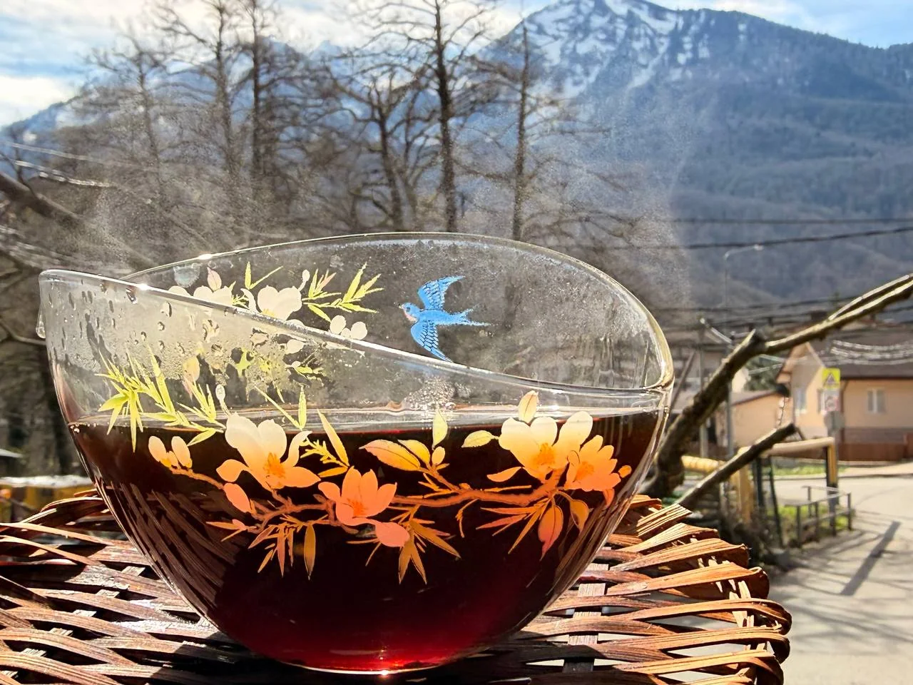

Дегустационный цикл
72 чайных отражения Сунь Укуна
Серия сравнительных дегустаций в чайной на Тверской. Каждая встреча раскрывает одну тему через несколько завариваний.
Как проходит встреча
Чайный шеф Виктор Енин выбирает сорта, заваривает их рядом и разбирает с гостями вкус, сбор и обработку. Программу и состав угощений чайная объявляет для каждой даты.
Цикл начался 26 сентября 2024 года. Осенью 2026-го клуб открыл третий сезон.

Участие
Сначала выберите тип билета.
Обычные билеты дают одно посещение в пределах срока. Конкретную встречу нужно согласовать после покупки. Для активации напишите или позвоните: +7 903 010-80-30 или Telegram чайного шефа.